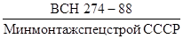
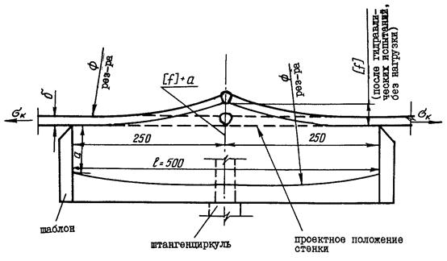
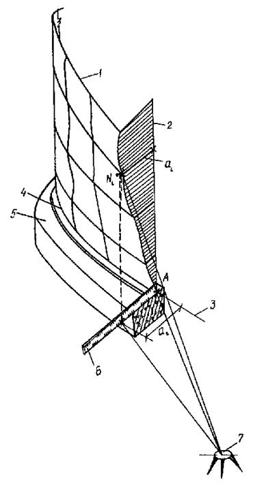

ВЕДОМСТВЕННЫЕ СТРОИТЕЛЬНЫЕ НОРМЫ
МОНТАЖ СТАЛЬНЫХ ВЕРТИКАЛЬНЫХ
ЦИЛИНДРИЧЕСКИХ РЕЗЕРВУАРОВ
ДЛЯ ХРАНЕНИЯ НЕФТИ И НЕФТЕПРОДУКТОВ
ОБЪЕМОМ от 100 до 50000 м3
ВСН 311-89
Минмонтажспецстрой СССР
МИНИСТЕРСТВО
МОНТАЖНЫХ И СПЕЦИАЛЬНЫХ
СТРОИТЕЛЬНЫХ РАБОТ СССР
Москва - 1990
Разработаны институтами:
ВНИИмонтажспецстрой Минмонтажспецстроя СССР (докт. техн. наук Б. В. Поповский, Г. А. Ритчик, Е. Л. Зелигер, Л. Я. Бызер, кандидаты техн. наук Л. В. Дубень и В. А. Карасик);
Гипронефтеспецмонтаж (канд. техн. наук И. С. Гольденберг, Е. Т. Кузнецов, В. Н. Тюрин);
Гипрохиммонтаж (И. П. Петрухин, канд. техн. наук Я. А. Шейнблит).
Внесены и подготовлены к утверждению Главным научно-техническим управлением Минмонтажспецстроя СССР.
С введением в действие ВСН 311-89/Минмонтажспецстрой СССР "Монтаж стальных вертикальных цилиндрических резервуаров дли хранения нефти и нефтепродуктов объемом от 100 до 50000 м3" утрачивают силу ВСН 311-89/Минмонтажспецстрой СССР "Инструкция по изготовлению и монтажу вертикальных цилиндрических резервуаров.
|
Министерство монтажных и специальных строительных работ СССР (Минмонтажспецстрой СССР) |
Ведомственные строительные нормы |
ВСН 311-89 |
|
|
Минмонтажспецстрой СССР |
|||
|
Монтаж стальных вертикальных цилиндрических резервуаров дли хранения нефти и нефтепродуктов объемом от 100 до 50000 м3 |
|||
|
Взамен |
|
||
|
Минмонтажспецстрой СССР |
|
1.1. Настоящие ведомственные строительные нормы устанавливают правила и нормы монтажа стальных вертикальных цилиндрических резервуаров для хранения нефти и нефтепродуктов объемом от 100 до 50000 м3 включительно.
На основе настоящих норм предприятия-изготовители резервуарных конструкций разрабатывают в составе эксплуатационной документации инструкции по монтажу конкретных резервуаров, а монтажные организации - проекты производства работ (ППР).
1.2. В качестве основного метода сооружения резервуаров принят метод рулонирования, при котором стенки, днища, центральные части плавающих крыш и понтонов поставляют на монтажную площадку в виде рулонированных полотнищ, а покрытия, короба понтонов и плавающих крыш, кольца жесткости и другие конструкции - укрупненными элементами.
ВСН содержат также нормы и правила монтажа резервуаров полистовым методом.
1.3. Конструкции резервуара должны поставляться на монтажную площадку с рабочей документацией и сертификатами завода-изготовителя с приложением схем разверток полотнищ стенок и днищ с указанными номерами плавок и сертификатов каждого листа.
1.4. Монтаж резервуарных конструкций необходимо производить с соблюдением требований СНиП 3.03.01-87 "Несущие и ограждающие конструкции", настоящих ВСН, типовых ППР, привязанных к конкретному объекту с соблюдением правил техники безопасности и охраны труда, предусмотренных главой СНиП III-4-80 "Техника безопасности в строительстве"; "Правил устройства и безопасной эксплуатации грузоподъемных кранов", утвержденных Госгортехнадзором; "Правил техники безопасности при эксплуатации стреловых самоходных кранов" ВСН 274-88/Минмонтажспецстрой СССР, а также "Правил пожарной безопасности при производстве сварочных и других огневых работ на объектах народного хозяйства", утвержденных ГУПО МВД СССР.
|
Внесены Главным научно-техническим управлением Минмонтажспецстроя СССР. |
Утверждены
Минмонтажспецстроем СССР |
Срок введения |
2.1. При приемке основания и фундамента должны быть проверены:
правильность разбивки осей резервуара;
наличие обозначенного центра основания (в центре должен быть забит знак из трубы диаметром Ду 40 мм на глубину 500 - 600 мм);
соответствие уклона основания проектному;
отметки поверхности основания и фундамента;
обеспечение отвода поверхностных вод от основания;
соответствие гидроизоляционного слоя проектному;
соответствие фундамента под шахтную лестницу проектному.
2.2. Отклонения фактических размеров оснований и фундаментов резервуаров от проектных не должны превышать величин, приведенных в табл. 17 СНиП 3.03.01-87 (см. обязательное приложение 1).
3.1. Рулонированные конструкции высотой до 12 м транспортируются на четырехосных железнодорожных платформах грузоподъемностью 60 т (черт. 1, а).
3.2. Для транспортирования рулонов высотой 18 м целесообразно использовать железнодорожные транспортеры сцепного типа грузоподъемностью 120 т (черт. 1, в).
Рулонированные конструкции высотой 18 м можно перевозить также на железнодорожной четырехосной платформе грузоподъемностью 60 т с двумя платформами прикрытия. В этом случае необходимо обеспечить одновременное отправление нескольких рулонов, тогда каждая платформа прикрытия перекрывает концы двух рулонов (черт. 1, б).
3.4. При погрузке на железнодорожные транспортеры сцепного типа рулоны укладываются в ложементы, находящиеся друг от друга на расстоянии по осям 12,36 м. Поверхность соприкосновения ложемента с рулоном выстилается досками длиной 1 м и толщиной не менее 30 мм, а крепление рулона к ложементу производится бандажами из полосовой стали с помощью инвентарных винтовых стяжек.
3.5. Элементы резервуарных конструкций (щиты покрытий, элементы колец жесткости и опорных колец, короба понтонов и плавающих крыш и др.) перевозят на железнодорожных платформах и в полувагонах в специальных контейнерах или без них и закрепляют способами и средствами, исключающими их деформацию.
Перевозка рулонов железнодорожным транспортом:
а - перевозка рулона высотой 12 м на четырехосной платформе (разгрузка с помощью крана); б - перевозка рулона высотой 18 м на четырехосной платформе с двумя платформами прикрытия; в - перевозка рулона высотой 18 м на сцепном транспортере
1 - самоходный кран; 2 - разгрузочная траверса; 3 - место маркировки рулона; 4 - четырехосная железнодорожная платформа; 5 - рулон; 6 - платформа прикрытия; 7 - сцепной транспортер; 8 - неподвижный ложемент; 9 - подвижный ложемент
Черт. 1
Мелкие детали (болты, гайки, соединительные элементы ограждений, патрубки и др.) укладывают в специальные ящики.
3.6. Конструкции резервуара, подлежащие перевозке в пределах сети железных дорог СССР на общих условиях, не должны превышать общесетевого габарита погрузки, установленного МПС СССР.
Металлические конструкции длиной, не превышающей габариты платформ и полувагонов, допускается грузить на все железные дороги, кроме Дальневосточной, по льготному габариту погрузки. В накладной на такие грузы отправитель делает отметку "Льготный габарит".
3.7. Перевозка негабаритных или тяжеловесных металлических конструкций производится в соответствии с "Инструкцией по перевозке негабаритных и тяжеловесных грузов на железных дорогах СССР колеи 1520 мм" (М.: Транспорт, 1985).
3.9. Разгрузка рулонов с железнодорожных транспортеров и платформ должна осуществляться на специально подготовленных площадках в соответствии с ППР на погрузочно-разгрузочные работы.
Категорически запрещается сбрасывание рулонов с платформы или транспортера на песчаные или другие подсыпки.
3.10. Разгрузку рулона с железнодорожной платформы или транспортера в зависимости от его массы и высоты, а также наличия грузоподъемных средств производят одним из следующих способов:
с помощью двух грузоподъемных кранов или крана и траверсы (см. черт. 1, а) В этом случае стропы траверсы располагаются на равном расстоянии по обе стороны от центра тяжести рулона (центр тяжести рулона, его масса и габариты указываются заводом-изготовителем несмываемой краской на боковых поверхностях);
скатыванием по балкам. При этом платформу или транспортер затормаживают башмаками. Устанавливают две разгрузочные балки, а под край платформы со стороны скатывания подставляют опорные стойки. Целесообразно площадку разгрузки и хранения рулонов устраивать в одном уровне с железнодорожной платформой. Скатывание рулонов на площадку хранения осуществляется тремя лебедками или тракторами (черт. 2 и 3).
При наличии выровненной грунтовой поверхности с песчаной подсыпкой разрешается перекатывать рулоны (по ходу витков) на расстояние не более 50 м (черт. 4, а).
Погрузку рулонов на полуприцепы и прицепы-тяжеловозы для дальнейшей доставки к месту монтажа осуществляют кранами или накатыванием с помощью лебедок или тракторов (черт. 4, б).
При выполнении погрузочно-разгрузочных работ следует строго выполнять требования ППР и правил техники безопасности.
3.11. Рулоны высотой до 12 м, массой до 32,4 т и элементы резервуарных конструкций транспортируют от разгрузочной площадки к месту монтажа на трехосных полуприцепах МАЗ-9389 с тягачами МАЗ-6422.
Рулоны высотой 12, 15 и 18 м, массой до 60 т целесообразно перевозить на прицепе-тяжеловозе ЧМЗАП-5212 грузоподъемностью 60 т, оборудованном поворотной седловиной, вместе с двухосным прицепом-роспуском грузоподъемностью 25 т. В качестве тягача можно использовать автомобиль КрАЗ-255 Б1 или КрАЗ-260.
Разгрузка рулона на рампу для приема и хранения рулонов
1 - железнодорожная платформа; 2 - опорные стойки; 3 - разгрузочная рампа; 4 - разгрузочные балки, 5 - рулон; 6 - тяговый канат на лебедку или трактор; 7 - удерживающие канаты
Черт. 2
Разгрузка рулона на площадку хранения по наклонным балкам
1 - железнодорожная платформа; 2 - опорные стойки; 3 - тяговый канат на лебедку или на трактор; 4 - разгрузочные балки; 5 - рулон; 6 - удерживающие канаты
Черт. 3
Перекатывание рулона по грунтовой площадке и погрузка его на прицеп (полуприцеп)
а - перекатывание рулона; б - погрузка на прицеп накатыванием с помощью лебедок или тракторов
1 - прицеп (полуприцеп); 2 - тяговые канаты на лебедки или трактора; 3 - удерживающий (тормозной) канат; 4 - погрузочные балки; 5 - рулон; 6 - опорные стойки; 7 - подкладки из дерева; 8 - башмак
Черт. 4
На транспортное сродство рулон укладывают на деревянные брусья с обтяжкой хомутами (в соответствии с требованиями п. 3.3 настоящей инструкции).
3.12. При транспортировании рулонов и элементов резервуарных конструкций по автомобильным дорогам, открытым для общего пользования, необходимо выполнять требования "Инструкции по перевозке крупногабаритных и тяжеловесных грузов автомобильным транспортом" (утверждена приказом МВД СССР от 24 февраля 1977 г. № 53) и "Правил дорожного движения".
3.13. Складировать конструкции резервуаров в зоне монтажа необходимо на заранее подготовленной площадке, соблюдая последующую очередность подачи их в монтаж.
Рулоны необходимо укладывать на деревянные балки, располагаемые под кольцами каркаса. Все элементы конструкций должны быть уложены таким образом, чтобы исключить их поломку и деформацию.
3.14. При приемке и складировании конструкций резервуаров в монтажной зоне проверяют комплектность поставки по комплектовочной ведомости, соответствие их проекту и требованиям настоящей инструкции.
До начала монтажа выполняют следующие работы:
устраивают не менее двух временных проездов (въездов) на монтажную площадку;
подготавливают площадки вокруг основания (фундамента) для работы кранов и других механизмов в соответствии с требованиями ППР. Места работы кранов при подъеме рулонов и других конструкций резервуаров должны быть уплотнены до состояния, соответствующего требованиям технических характеристик применяемых кранов;
подготавливают площадки для размещения временных помещений (производственных, административных, бытовых и др.), а также для общего складирования металлоконструкций и укрупнительной сборки;
подготавливают пандус (пандусы) для накатывания рулонов на основание (фундамент);
подводят техническую воду, электроэнергию для работы кранов, механизмов, сварочного и другого оборудования, а также осветительную электроэнергию;
обеспечивают отвод поверхностных ливневых вод из зоны монтажной площадки;
ограждают и обозначают зону монтажа предупредительными знаками согласно ГОСТ 23407-78;
принимают основание (фундамент) под резервуар и под шахтную лестницу в соответствии с требованиями проекта и пп. 2.1 и 2.2 настоящих ВСН.
1) укладывают в проектное положение окрайки, контролируя правильность их укладки с помощью разметочного приспособления, закрепленного в центре основания. При монтаже резервуаров объемом более 20000 м3 окрайки следует укладывать по радиусу, превышающему проектный на величину усадки кольца окраек после сварки (10 - 15 мм), что должно быть предусмотрено ППР.
По окончании сборки кольца окраек необходимо проверить:
отсутствие изломов в стыках окраек;
отсутствие прогибов и выпуклостей;
горизонтальность кольца окраек;
соответствие зазоров в стыках проектным;
2) прихватывают собранное кольцо окраек и сваривают радиальные стыки, соблюдая требования ППР и раздела 5 настоящих ВСН;
3) накатывают рулоны днища на основание по специально устроенному пандусу одним из следующих способов;
тракторами, применяя приспособления, закрепленные на торцах рулона (черт. 5);
с помощью охватывающего рулон каната, концы которого закрепляют к тракторам (тракторным лебедкам).
Развертывание рулонов днища резервуара специальным приспособлением
1 - трактор; 2 - пандус; 3 - приспособление; 4 - рулон днища
Черт. 5
При наличии на монтажной площадке крана требуемой грузоподъемности укладку рулона днища на основание производят краном с помощью траверсы.
Конструкция пандуса должна обеспечивать сохранность формы основания и бетонного кольца во время накатывания рулонов. Если при перекатывании рулонов тягового усилия трактора (тракторной лебедки) недостаточно, то следует применить полиспаст;
4) развертывают рулоны днища с учетом наименьшего перекатывания рулонов на одном участке основания и с последующим перемещением развернутых полотнищ в проектное положение, соблюдая следующую последовательность:
устанавливают рулон в исходное положение для развертывания и срезают удерживающие планки;
развернув наружное полотнище, перемещают его в положение, близкое к проектному (черт. 6). Таким же образом развертывают остальные полотнища;
устанавливают центральное полотнище в проектное положение.
Укладка развернутого полотнища днища в проектное положение
1 - исходное положение рулона днища; 2 - пандус; 3 - развернутое полотнище; 4 - трактор
Черт. 6
Параллельно прямолинейным кромкам полотнища наносят риски на расстоянии величины нахлестки полотнищ. По рискам приваривают ограничительные пластины и с помощью трактора смещают промежуточные полотнища в проектное положение (до упора с ограничительными пластинами). Аналогичным образом укладывают остальные полотнища.
Допускается развертывание одного полотнища днища на другом, а также полотнищ днища вне основания. Перемещение развернутых полотнищ в проектное положение производят трактором (тракторной лебедкой);
5) сваривают днище в соответствии с требованиями ППР. Перед сваркой необходимо проверить: соответствие размеров днища проектным; соблюдение размеров в нахлесточных соединениях, особенно в местах двойной нахлестки; предусмотренное проектом расположение окраек относительно средней части днища; правильность размещения и зачистку прихваток.
При наличии остаточной деформации на периферийных участках центральной части днища до установки полотнища в проектное положение необходимо выполнить их правку.
4.2.2. По окончании монтажа и сварки днища производят его разметку в следующей последовательности:
1) фиксируют центр резервуара приваркой шайбы и наносят оси резервуара;
2) в центре днища закрепляют разметочное приспособление, обеспечивающее точность кольцевой разметки;
3) на днище резервуаров без плавающей крыши (понтона) наносят кольцевые риски:
установки ограничительных уголков (по наружному радиусу резервуара). Для резервуаров объемом свыше 20000 м3 рекомендуется вводить поправку, учитывающую усадку при сварке (10 - 15 мм);
контроля вертикальности стенки (на 200 мм меньше внутреннего радиуса резервуара);
установки опорной плиты под монтажную стойку;
контроля вертикальности монтажной стойки (величину радиуса риски определяют в зависимости от диаметра центрального щита покрытия).
Наносят радиальные риски длиной 400 - 500 мм (начиная от точки пересечения оси резервуара с кольцевой риской установки ограничительных уголков) для фиксации;
положения вертикальной кромки первого разворачиваемого рулона;
положения осей монтажных стыков стенки (при наличии нескольких рулонов стенки);
места установки первого элемента опорного кольца или кольцевой площадки;
места установки первого щита покрытия.
Намечают также места приварки скоб для крепления расчалок монтажной стойки;
4) на днище резервуаров с плавающей крышей или понтоном наносят кольцевые риски:
установки ограничительных уголков (по наружному радиусу резервуара);
установки коробов плавающей крыши;
установки вертикальных листов и ребер открытого понтона;
5) от точки пересечения оси резервуара с кольцевой риской установки ограничительных уголков наносят радиальные риски:
начала развертывания первого рулона;
положения осей монтажных стыков стенки;
начала установки первых элементов колец жесткости;
6) наносят также риски, определяющие места расположения стоек плавающей крыши (понтона). По этим рискам приваривают к днищу опорные плиты под стойки (кроме плит, находящихся в зоне развертывания рулонов стенки);
7) от точки пересечения оси резервуара с кольцевой риской установки коробов наносят радиальную риску начала установки коробов плавающей крыши.
Все радиальные риски наносят яркой несмываемой краской.
4.2.3. Центральную часть плавающей крыши (понтона) монтируют после разметки днища резервуара и прихватки плит под опорные стойки в следующей последовательности:
1) накатывают рулоны и развертывают их на днище резервуара одним из способов, описанных в п. 4.2.1 настоящих ВСН;
2) развернутые элементы центральной части плавающей крыши сваривают между собой. Центральный монтажный стык сваривают на треть длины начиная от центра в обе стороны и на всю длину, когда открытый (ребристо-кольцевой) понтон сваривают из отдельных элементов, собираемых на монтаже;
3) по окончании сборки и сварки полотнищ центральной части проверяют правильность расположения центральной части относительно криволинейной кромки окраек и прихватывают днище плавающей крыши (понтона) к днищу резервуара.
4.2.4. После завершения монтажа центральной части плавающей крыши (понтона) на нее переносят центр днища резервуара, закрепляют в центре разметочное приспособление и производят разметку кольцевых рисок установки подкладного листа под монтажную стойку (на 10 мм больше радиуса подкладного листа) и контроля вертикальности монтажной стойки (размер определяется в зависимости от диаметра центрального щита).
Кроме того, наносят риски, определяющие положение опорных стоек плавающей крыши (понтона) и места приварки скоб для крепления расчалок монтажной стойки.
4.3.1. Установка рулонов в вертикальное положение.
Установку рулонов в вертикальное положение рекомендуется производить с опиранием на шарнир краном, перемещающимся в процессе подъема по специально подготовленной площадке (черт. 7).
Перед установкой рулонов стенки производят следующие подготовительные работы:
устанавливают шарнир таким образом, чтобы поднятый рулон занял исходное положение для начала развертывания;
приподняв нижний конец рулона краном, подводят под него шарнир и прикрепляют рулон к ложу шарнира с помощью крепежного устройства;
закрепляют шарнир на днище приваркой планок;
верхний конец рулона опирают на клеть из шпал высотой 300 - 500 мм, располагаемую под вторым кольцом каркаса, считая от торца рулона;
Подъем рулона стенки краном, перемещающимся в процессе подъема
1 - рулон стенки; 2 - кран; 3 - захват для подъема рулона; 4 - шарнир; 5 - грузовой канат; 6 - тормозной канат; 7 - тормозной трактор; 8 - реперы, определяющие этапы перемещения крана; 9 - угловой сектор
Черт. 7
на первый рулон стенки рядом с вертикальной кромкой закрепляют трубу жесткости с тремя расчалками, придающую поперечную жесткость начального участка полотнища при развертывании;
на нижнем торце рулона к каркасу крепят поддон из листовой стали толщиной 6 - 8 мм, диаметром 3400 мм. Поддон со стороны днища обильно смазывают солидолом;
производят строповку грузового каната через захват, устанавливаемый на верхнем торце рулона (кроме этого, к захвату крепят тормозной канат) или штуцера, привариваемые к рулону на подкладных листах на расстоянии 500 - 1000 мм от верхнего торца;
проверяют перпендикулярность продольных осей рулона и трубы шарнира. Ось рулона, грузовой и тормозной канаты должны находиться в одной вертикальной плоскости;
производят обтяжку и проверку такелажной оснастки пробным подъемом рулона на 100 - 200 мм с выдержкой в течение 10 мин.
Подъем рулона с одновременным контролем допустимого отклонения полиспаста крана от вертикали (по соответствующей риске на условном секторе) чередуют с перемещением крана по площадке на определенное расстояние между заранее установленными реперами без изменения вылета стрелы.
В процессе подъема необходимо обеспечивать провисание тормозного каната до достижения рулоном угла наклона на 10 - 18° меньше угла положения неустойчивого равновесия.
При дальнейшем подъеме выбирают слабину тормозного каната. Движение рулона при переходе его центра тяжести через ось поворота обеспечивают за счет своевременного включения в работу тормозного трактора, что достигается контролем угла наклона по угловому сектору. С помощью тормозного трактора рулон плавно устанавливают на днище резервуара.
Рулон может быть поднят в вертикальное положение другими способами, предусмотренными ППР, в том числе с использованием кранов меньшей грузоподъемности (с опиранием на стойку или расположением грузового полиспаста параллельно стреле), а также двух кранов без опорного шарнира и т.п.
4.3.2. Установка монтажной стойки
Монтажную стойку, используемую для укладки щитов покрытия, устанавливают в центре днища резервуара в следующей последовательности:
1) уточняют высоту монтажной стойки в соответствии с фактической высотой центра днища резервуара. У стоек резервуаров объемом 10000 м3 и более, кроме того, учитывается строительный подъем сферического покрытия, а оголовки монтажных стоек снабжаются устройством, позволяющим плавно опускать смонтированное и полностью сваренное покрытие в проектное положение;
2) устанавливают стойку в вертикальное положение краном с подтаскиванием нижнего конца трактором, обеспечивая вертикальность полиспаста крана;
3) фиксируют монтажную стойку в центре днища с помощью специальных упоров;
4) крепят стойку в вертикальном положении пятью расчалками с талрепами. На резервуарах объемами 10000 м3 и более расчалки крепят к периферийной части днища на расстоянии не менее 4,5 м от стенки таким образом, чтобы при развертывании рулона расчалки не мешали его перемещению. На резервуарах объемами 5000 м3 и менее расчалки крепят к наземным якорям, расположенным за основанием (фундаментом).
По мере развертывания рулона мешающие расчалки поочередно укорачивают и крепят к днищу резервуара через приварные скобы с подкладными пластинами;
5) стойку выставляют в вертикальном положении с помощью талрепов расчалок. Контроль производят по отвесам.
4.3.3. Развертывание рулонов стенки
До начала развертывания рулона стенки к днищу резервуара по кольцевой риске приваривают ограничительные уголки с интервалом 250 - 300 мм (черт. 8). В зоне вертикального монтажного стыка на расстоянии 3 м в обе стороны от стыка ограничительные уголки приваривают по окончании формообразования концов полотнищ.
Приварка ограничительных уголков:
а - для резервуаров объемом до 20000 м3; б - усиленная для резервуаров объемом свыше 20000 м3
1 - ограничительный уголок; 2 - стенка резервуара; 3 - приварка
Черт. 8
Развертывание рулона (черт. 9, 10) производят трактором с помощью каната и тяговой скобы, привариваемой к рулону на высоте 500 мм. При этом соблюдают следующую последовательность:
приваривают тяговую скобу в первое положение;
срезают удерживающие планки (см. п. 10.9);
развернув часть полотнища и не ослабляя натяжение каната, устанавливают клиновой упор между рулоном и развернутой частью полотнища;
ослабляют натяжение каната тяговой скобы до прижатия рулона к клиновому упору и погашения упругих деформаций полотнища;
приваривают вторую тяговую скобу с канатом, снимают первую скобу и продолжают развертывание рулона.
По мере развертывания рулонов полотнище стенки прижимают к ограничительным уголкам, прихватывают и приваривают к днищу резервуара.
На всех этапах развертывания рулона необходимо следить за тем, чтобы сварной шов крепления тяговой скобы к рулону не работал на излом. Развертывание очередного участка полотнища необходимо прекратить, когда опорная пластина тяговой скобы расположится по направлению тягового каната.
Концы полотнища на длине 3 м от вертикальных кромок к днищу не прихватывают.
Развертывание рулона стенки резервуара со стационарным покрытием
1 - кран; 2 стойка для монтажа опорного кольца; 3 - щит покрытия, 4 - монтажная стойка; 5 - опорное кольцо; 6 - переносные расчалки; 7 - развернутая часть полотнища стенки; 8 - расчалки монтажной стойки; 9 - рулон стенки; 10 - клиновой упор; 11 - трактор
Черт. 9
Развертывание рулона ставки резервуара с плавающей крышей
1 - стойка для монтажа кольца жесткости (промежуточных колец); 2 - кольцо жесткости; 3 - переносные расчалки; 4 - развернутая часть полотнища стенки; 5 - рулон стенки; 6 - клиновой упор; 7 - трактор
Черт. 10
При развертывании рулонов стенки высотой 18 м из стали марки 16Г2АФ для удержания витков полотнища в зоне развертывания рекомендуется применять удерживающий канат, один конец которого закрепляют к окрайкам днища резервуара, а другой - к трактору. По мере развертывания рулона этот канат постепенно ослабляют (черт. 11).
Развертывание рулонов высотой 18 м с последующей их прихваткой к днищу следует производить участками не более 1,5 - 2 м.
Удержание рулона стенки из высокопрочной стали в зоне развертывания
1 - труба жесткости; 2 - начальный участок полотнища стенки; 3 - упор; 4 - прихватка стенки к днищу; 5 - ограничительные уголки; 6 - скоба; 7 - удерживающий канат; 8 - трактор; 9 - риски для приварки ограничительных уголков; 10 - рулон стенки
Черт. 11
На верхних поясах стенки резервуара, не закрепленных элементами опорных колец, кольцевых площадок или щитами покрытия, устанавливают расчалки, предохраняющие стенку от потери устойчивости под действием ветровой нагрузки.
4.3.4. Замыкание монтажных стыков стенок
Перед замыканием монтажных стыков развернутых полотнищ стенки производят формообразование концов полотнищ, имеющих значительные остаточные деформации от рулонирования. Как правило, формообразуют полотнища стенки толщиной 8 мм и более. Формообразование производят трактором с помощью специальных приспособлений.
В том случае, когда требуется формообразовать один или два пояса полотнища стенки в качестве приспособления рекомендуется применять гибочный сектор (черт. 12).
Формообразование нижних поясов стенки
1 - рулон стенки; 2 - кран; 3 - гибочный сектор; 4 - формообразуемый участок полотнища; 5 - тяговый канат; 6 - трактор
Черт. 12
При формообразовании полотнища по всей высоте применяют специальное приспособление, изготовленное из каркаса рулона с установленными на нем гибочными шаблонами (черт. 13).
При формообразовании концевых участков полотнищ стенки может быть применен механизированный способ правки гидравлическим устройством конструкции Гипронефтеспецмонтажа и Таллиннского политехнического института (черт. 14).
При формообразовании концы полотнищ на длине 3 м не должны иметь элементов опорного кольца или кольцевой площадки.
Формообразование считают законченным в том случае, если по его окончании концевой участок полотнища занимает положение, близкое к проектному.
Формообразование полотнища стенки по всей высоте
1 - трактор; 2 - тяговый канат, 3 - приспособление для формообразования; 4 - кран, 5 - наземный якорь; 6 - упор; 7 - формообразованный участок полотнища; 8 - стойка-упор
Черт. 13
После формообразования срезают нахлест с разделкой кромки и окончательно собирают стык с проектным зазором на прихватках с некоторым выводом собранного стыка наружу за проектную кривизну резервуара на величину, предусмотренную ППР, с тем, чтобы после сварки монтажного стыка угловые деформации не превышали допусков, приведенных в проекте и настоящих ВСН. Для этой цели применяют приспособление, обеспечивающее вывод стыкуемых участков полотнищ в требуемое положение (черт. 15).
После сварки, проверки качества выполнения сварных соединений, исправления дефектов и повторного контроля снимают все монтажные приспособления с полотнища стенки в зоне монтажного стыка.
4.3.5. Монтаж опорных колец и колец жесткости
Элементы опорного кольца и колец жесткости устанавливают по мере развертывания полотнища стенки. Предварительно верх стенки в местах установки колец с помощью расчалок и переносной скобы выводят в проектное положение (см. черт. 9, 10).
Формообразование полотнища стенки гидравлическим устройством
1 - гидравлическое устройство; 2 - кран; 3 - строп; 4 - пульт управления устройством; 5 - начальный участок полотнища стенки; 6 - упор; 7 - рулон стенки
Черт. 14
Замыкание вертикального монтажного стыка
1 - ограничительная пластина; 2 - клин; 3 - ось вертикального монтажного стыка; 4 - приспособление для замыкания
Черт. 15
До монтажа кривизну элементов опорного кольца и кольца жесткости сверяют по риске наружного диаметра резервуара, проведенной на днище.
В зависимости от конструкции опорного кольца допускается монтаж его элементов укрупненными блоками.
Перед установкой элемента опорного кольца в проектное положение к нему закрепляют ловители и краном навешивают элемент на стенку резервуара.
Элемент опорного кольца, прихваченный к стенке резервуара, приводят с помощью расчалок к проектному положению, определяемому с помощью отвеса по риске контроля вертикальности стенки резервуара, проведенной на днище. Отвесы оставляют до конца монтажа.
После установки второго и последующего элементов, прихватки и приварки их к стенке проверяют вертикальность стенки по отвесам и только тогда производят сварку элементов между собой. Установку элементов кольца жесткости ведут аналогично установке элементов опорного кольца.
Если резервуар имеет промежуточные кольца жесткости по высоте стенки, монтаж элементов этих колец должен опережать монтаж верхнего кольца жесткости (опорного кольца) на 5 - 7 м.
Элементы промежуточного кольца жесткости краном устанавливают на опорные кронштейны, ранее закрепленные на стенке.
Для монтажа элементов опорных колец и колец жесткости рекомендуется применять вертикальные самоходные подъемники.
4.4.1. Центральную часть плавающих крыш (понтонов) собирают также как и днище резервуара сразу после монтажа последнего (см. пп. 4.2.1, 4.2.2). Края центральной части плавающих крыш (понтонов) прихватывают по всему периметру к днищу резервуара.
4.4.2. Короба плавающих крыш монтируют по мере развертывания стенки резервуара в следующей последовательности:
проверяют герметичность сварных соединений коробов и сварного шва, соединяющего стенку с днищем;
монтируют опорные плиты под стойки, расположенные в зоне коробов;
по мере установки коробов срезают прихватки, фиксирующие периферийную кромку центральной части плавающей крыши (понтона) на днище резервуара;
совмещают нижнюю кромку наружного вертикального кольцевого листа короба с риской на днище, проверяют вертикальность наружного кольцевого листа по отвесу и фиксируют это положение подкладками;
прихватывают короба по мере установки друг к другу;
сваривают короба между собой после полного окончания их монтажа или по мере прихватки друг к другу.
4.4.3. К сборке центральной части плавающей крыши (понтона) с коробами разрешается приступать после полного завершения монтажа, сварки и проверки собранного кольца из коробов.
Сборку и сварку недоваренного участка днища плавающей крыши (понтона) осуществляют только после прихватки всего кольцевого шва.
4.4.4. Сборку и сварку открытого (ребристо-кольцевого) понтона производят поэлементно по мере разворачивания рулона стенки.
Наружный кольцевой лист устанавливают по риске на центральной части понтона, проверяют вертикальность по отвесу и фиксируют это положение приваркой косынок.
4.4.5. Установку и крепление стоек плавающей крыши (понтона) осуществляют после ее подъема наполнением резервуара водой до уровня, превышающего проектную высоту стоек на 200 мм.
После слива воды из резервуара и очистки днища производят окончательную приварку опорных плит стоек плавающей крыши (понтона), сварку потолочных швов и элементов крепления направляющих.
4.5.1. Перед началом монтажа покрытия любого типа необходимо проверить соосность вертикальных пластин центрального щита (до установки его на монтажную стойку) пластинам, приваренным к балкам щитов. Установку щитов производят по мере развертывания полотнищ стенки. При установке щитов необходимо тщательно следить за вертикальностью центральной монтажной стойки.
4.5.2. Первым укладывают начальный щит, имеющий две несущие балки, затем промежуточные щиты, имеющие по одной несущей балке, и в последнюю очередь укладывают замыкающий щит, не имеющий несущих балок. Первый щит покрытия устанавливают по разметке.
Плоские щиты сначала опускают вершиной на центральную стойку. После закрепления вершины щита болтами опускают основание щита с ловителями на стенку резервуара. Щиты прихватывают к стенке резервуара и друг к другу.
4.5.3. Щиты сферических покрытий предварительно собирают из двух или более частей на специальных стендах-кондукторах. При установке сферических щитов (см. черт. 9) сначала опускают основание щита с ловителями на опорное кольцо, а затем вершину на центральный щит и закрепляют монтажными болтами с последующей приваркой. При этом необходимо следить за тем, чтобы вершина легко продвинулась на центральном щите, погасив распорные усилия сферического щита.
При укладке каждого последующего сферического щита необходимо обеспечить его опирание на опорное кольцо, центральный щит и радиальную кромку предыдущего щита.
По мере укладки щитов в первую очередь прихватывают основание щита к опорному кольцу, затем радиальные стыки сферических щитов - друг к другу и, наконец, вершину - к центральному щиту.
4.5.4. Сборку щитов арочного покрытия выполняют на стенде, обеспечивающем соосность балок и стыкуемых элементов. Технология установки щитов арочного покрытия в проектное положение аналогична вышеописанной в данном разделе для сферического покрытия.
4.5.5. Перед укладкой замыкающего щита покрытия демонтируют выступающую часть лестницы монтажной стойки.
4.5.6. После завершения монтажных и сварочных работ на покрытии его опускают в проектное положение, снимая нагрузку с монтажной стойки.
В процессе опускания покрытия необходимо контролировать величину его просадки, которая должна соответствовать указанию проекта. Опустив покрытие в проектное положение, в течение двух-трех часов наблюдают за его состоянием. Если деформаций покрытия не происходит, стойку демонтируют.
4.5.7. При сооружении резервуаров объемами 100 и 200 м3 покрытие монтируют без применения центральной монтажной стойки двумя щитами или в полностью собранном виде.
4.5.8. Рулонированные конические покрытия на резервуарах объемами от 100 до 400 м3 монтируют в следующей последовательности (черт. 16):
собирают и сваривают днище резервуара;
собирают на днище резервуара полотнища крыши, используя днище в качестве кондуктора;
производят на собранной и сваренной крыше установку всех патрубков, площадок обслуживания и ограждений;
снимают полностью собранную крышу с днища и устанавливают в стороне;
монтируют стенку резервуара и верхний обвязочный уголок;
полностью собранную крышу устанавливают на стенке резервуара.
Сборка рулонированной конической крыши:
а - сборка крыши на смонтированном днище резервуара; б - установка полностью собранной крыши на стенку резервуара
1 - днище резервуара; 2 - собираемые полотнища крыши; 3 - строп; 4 - кран; 5 - стенка резервуара; 6 - полностью собранная крыша
Черт. 16
4.6.1. Технологию монтажа резервуаров, характеризующуюся горизонтальным развертыванием рулонов стенок на специальном стенде-кондукторе с последующей установкой изготовленного на стенде блока стенки в проектное вертикальное положение, рекомендуется применять для резервуаров объемами 20000 м3 и более, особенно при сооружении парка резервуаров.
4.6.2. Остальные конструктивные элементы: днища, плавающие крыши (понтоны), покрытия и другие - монтируются способами в соответствии с разделами 4.1 - 4.5.
4.6.3. Основными монтажными устройствами для осуществления горизонтального развертывания днища рулонов стенок являются инвентарные опора и стенд-кондуктор.
Опора, на которую укладывается в горизонтальное положение рулон для последующего развертывания, должна быть снабжена приспособлениями, обеспечивающими вращение рулона вокруг горизонтальной оси и препятствующими самопроизвольному развертыванию полотнища.
Схема горизонтального развертывания рулона и надвигания полотнища стенки на стенд
1 - стенд; 2 - опора; 3 - рулон; 4 - полотнище стенки; 5 - электрические лебедки
Черт. 17
Стенд-кондуктор представляет собой пространственную сборно-разборную конструкцию, состоящую из нескольких ферм, соединенных между собой прогонами и связями. Верхние пояса ферм - криволинейные, выполненные по внутреннему радиусу резервуара, нижние пояса - прямолинейные, являющиеся опорными для всего стенда. Длина верхнего пояса фермы должна быть несколько больше длины развертываемого полотнища.
4.6.4. Рулон стенки с помощью одного-двух кранов укладывается в горизонтальном положении на опору, которая устанавливается рядом со стендом. К начальной кромке рулонированного полотнища прикрепляется тяговая балка, оборудованная отводными блоками, через которые тросы идут на две электролебедки с тяговым усилием Q = 8 тс каждая (черт. 17). После обрезки удерживающих планок с соблюдением необходимых мер предосторожности производят развертывание и натаскивание полотнища на стенд.
4.6.5. Развернутое и размещенное на стенде полотнище должно быть прижато и прикреплено к нему с помощью прижимных устройств. Концевые участки полотнищ на длине ~ 3 м к стенду прикрепляются после их формообразования.
4.6.6. Операции по формообразованию концевых участков производятся аналогично применяющимся при вертикальном развертывании рулонов (см. п. 4.3.4). После окончания формообразования концевых участков они также прикрепляются к стенду.
4.6.7. На закрепленном на стенде полотнище монтируются другие конструктивные элементы стенки (для резервуаров с плавающей крышей - элементы верхней кольцевой площадки и промежуточных колец жесткости). В местах неплотного прилегания колец к стенке применяют прижимные приспособления. На концевых участках блока стенки элементы колец жесткости не устанавливаются - они монтируются после стыковки смежных блоков.
4.6.8. После монтажа блока к нему подгоняют и приваривают временные стойки и проушины для последующего раскрепления поднятого полотнища, закрепляют канаты дотягивающей и тормозной систем, а также временные расчалки.
4.6.9. Установка блока стенки в проектное положение осуществляется кранами соответствующей грузоподъемности. Особенности установки блоков стенки в проектное положение определяются способом горизонтального разворачивания.
Возможны два варианта:
первый - блок стенки монтируется на стенде, устанавливаемом непосредственно на днище резервуара, а затем поднимается в проектное положение с опиранием на шарнир краном, стоящим на днище;
второй - стенд устанавливается в стороне от фундамента резервуара, и смонтированный на нем блок стенки перемещается и устанавливается в проектное положение с помощью двух кранов, которые при этом на днище не заезжают.
4.6.10. После установки блока в проектное положение его раскрепляют расчалками, приваривают стенку к днищу резервуара с наружной стороны, разбирают и отсоединяют от полотнища стенд, который используют для монтажа следующих блоков.
4.6.11. После установки в проектное положение двух и более блоков выполняют сборку и сварку вертикальных монтажных стыков и устанавливают кольца жесткости и другие конструктивные элементы стенки на этих участках.
5.1. Сварка резервуарных конструкций или их отдельных узлов на монтаже должна производиться только после проверки правильности их сборки в соответствии с требованиями проектов и соответствующих нормативно-технических документов.
5.2. Последовательность сборочно-сварочных работ на монтажной площадке, способы сварки, порядок наложения швов, режимы сварки, диаметры и марки электродов и электродной проволоки, требования к другим сварочным материалам должны соответствовать ППР.
5.3. Допуск сварщиков к сварке резервуаров осуществляют в соответствии с требованиями главы СНиП 3.03.01-87.
Все монтажные сварные соединения должны регистрироваться в журнале сварочных работ (приложение 2 СНиП 3.03.01-87).
Руководство сварочными работами должно осуществлять лицо, имеющее документ о специальном образовании или подготовке в области сварки.
5.4. Постановка прихваток при сборке монтажных стыков должна выполняться аттестованными в соответствии с п. 5.3 сварщиками. Прихватки следует выполнять электродами той же марки, что и сварку.
5.5. Качество прихваток, сварных соединений креплений сборочных и монтажных приспособлений, определяемое внешним осмотром, должно быть не ниже качества основных сварных соединений. Все кратеры на прихватках, как и на сварных швах, должны быть заварены.
5.6. Наложение шва поверх прихваток или на предыдущий слой (при многослойной сварке) допускается производить только после зачистки последних от шлака и брызг металла. Участки шва или прихваток с порами, раковинами и трещинами должны быть удалены и вновь заварены.
5.7. При сварке монтажных соединений резервуарных конструкций следует применять преимущественно механизированные способы: автоматическую и механизированную сварку под флюсом, в защитных газах и самозащитной порошковой проволокой.
Для нахлесточных соединений днища, центральной части плавающей крыши (понтона), стационарного покрытия, таврового соединения стенки с днищем целесообразно применять автоматическую сварку.
Для стыковых соединений окраек днища и вертикальных стыковых соединений полотнищ стенки целесообразно применять механизированную сварку.
5.8. Сварка монтажных соединений резервуарных конструкций должна производиться с применением технологических приемов (способы и порядок наложения швов, количество слоев, количество одновременно работающих сварщиков и т.п.), обеспечивающих получение наименьших сварочных деформаций. Эти приемы должны быть отражены в проекте производства работ.
5.9. Свариваемые поверхности, конструкции и рабочее место сварщика следует надежно защищать от дождя, снега, ветра и сквозняков.
При температуре окружающего воздуха ниже минус 10 °С необходимо иметь вблизи рабочего места сварщика инвентарное помещение для обогрева, а при температуре ниже минус 40 °С - оборудовать тепляк.
5.10. Ручную и механизированную дуговую сварку конструкций из углеродистых и низколегированных сталей при температурах стали, ниже указанных в табл. 36 СНиП 3.03.01-87 (см. обязательное приложение 2), следует производить с предварительным подогревом стали в зоне выполнения сварки до 120 - 160 °С на ширине 100 мм с каждой стороны соединения. Контроль температуры подогрева следует выполнять термокрасками, термокарандашами либо контактным термопарным термометром, оптическим пирометром.
5.11. Автоматизированную дуговую сварку под флюсом разрешается производить без подогрева при температуре окружающего воздуха, приведенной в табл. 37 СНиП 3.03.01-87 (см. обязательное приложение 2). При температуре, ниже указанной в таблице, автоматизированную сварку под флюсом надлежит производить с предварительным местным подогревом до 120 - 160 °С.
5.12. Автоматизированную электрошлаковую сварку элементов независимо от их толщины в конструкциях из низколегированных или углеродистых сталей допускается выполнять без предварительного подогрева при температуре воздуха до минус 65 °С.
5.13. При температуре стали ниже минус 5 °С сварку следует производить от начала до конца шва без перерыва, за исключением времени, необходимого на смену электрода или электродной проволоки и зачистку шва в месте возобновления сварки.
В случае вынужденного прекращения сварки процесс следует возобновлять после подогрева стали в соответствии с технологическим процессом, разработанным для свариваемых конструкций.
5.14. Швы сварных соединений и конструкций по окончании сварки должны быть очищены от шлака, брызг и натеков металла. Удаление заводских и монтажных приспособлений и вспомогательных элементов сбиванием и отламыванием запрещено. После их удаления огневым или механическим способами остатки швов должны быть зачищены заподлицо с основным металлом. Углубления в основном металле не допускаются. После зачистки необходимо проконтролировать места креплений временных приспособлений с целью недопущения дефектов в этих местах.
Места зачистки на стенке из стали марки 16Г2АФ должны быть проконтролированы магнитопорошковым или капиллярным (цветным) методами с целью выявления и устранения трещин в основном металле.
5.15. Контроль сварных соединений на монтаже включает следующие методы:
внешний осмотр и измерение;
испытание на непроницаемость и герметичность смачиванием керосином или вакуум-камерой;
рентгенопросвечивание проникающими излучениями;
ультразвуковая дефектоскопия;
контроль магнитопорошковым или капиллярным (цветным) методами.
Перед контролем сварные соединения должны быть тщательно очищены от шлака, сварочных брызг и других загрязнений.
5.16. Контролю внешним осмотром и измерением подвергают все сварные соединения. Недопустимые дефекты должны быть устранены.
Результаты контроля и качество ремонта должны быть отражены в журнале сварочных работ (см. обязательное приложение 2 СНиП 3.03.01-87).
Непроницаемость сварных соединений стенок резервуаров с днищем и вертикальных монтажных сварных соединений стенок должна быть проверена керосином или вакуумом.
Сварные соединения покрытий резервуаров следует контролировать на герметичность вакуум-камерами до гидравлического испытания или избыточным давлением в момент гидравлического испытания резервуаров (см. п. 8.7).
Контроль непроницаемости и герметичности сварных соединений вакуум-камерой должен производиться по специальной инструкции.
Контролю неразрушающими методами подлежат сварные соединения резервуаров объемами 2000 - 50000 м3:
в стенках резервуаров, сооружаемых из рулонных заготовок, все вертикальные монтажные стыковые соединения (вертикальные монтажные стыковые соединения резервуаров объемом менее 2000 м3 контролируются внешним осмотром и на непроницаемость керосином или вакуумированием);
в стенках резервуаров, сооружаемых полистовым методом, - все вертикальные стыковые соединения I и II поясов и 50 % соединений III и IV поясов в местах примыкания этих соединений к днищу и пересечений с вышележащими горизонтальными соединениями;
все стыковые соединения окраек днищ в местах примыкания к ним стенок.
Объем контроля остальных сварных соединений, а также методы контроля, требования по результатам контроля и исправление дефектов сварных соединений - в соответствии с разделом 8 СНиП 3.03.01-87.
5.18. После исправления дефектных участков швы должны быть подвергнуты повторному контролю.
6.1. При изготовлении и монтаже резервуаров методом полистовой сборки следует соблюдать требования разделов 2, 3, п. 4.1, 4.2, 4.4, 4.5, 5, 7, 8, 9, 10 настоящих ВСН.
6.2. Организация, разрабатывающая или привязывающая ППР по монтажу резервуаров, должна в его составе уточнить подготовку кромок листов стенки в зависимости от принятых видов сварки, места строповки конструкций и другие вопросы, вытекающие из принятой технологии монтажа резервуаров. Одновременно должны быть разработаны поставляемые вместе с конструкциями резервуаров приспособления: устройства, конструкция которых должна предусматривать восприятие ветровых нагрузок для обеспечения устойчивости стенки во время монтажа; стенды для контрольной сборки и укрупнения листов стенки и кровли в блоки, монтажные стойки для резервуаров с покрытием; сборочные и строповочные приспособления; контрольные пластины для сварщиков и т.п.
6.3. В числе временных сооружений необходимо предусмотреть:
помещения для сварочного оборудования;
специальные сани для транспортирования автоматической установки типа "Циркоматик" и других сварочных аппаратов;
хранилище для контейнеров с ампулами радиоактивных веществ (в случае отсутствия рентгеновского аппарата);
кладовую для хранения сварочной проволоки, электродов и флюса с установкой в ней электрической печи для прокалки и сушки сварочных материалов;
помещение для проявления и обработки снимков просвеченных швов;
помещение для рабочих.
монтируют окрайки днища, собирая стыки между ними на остающейся подкладке с зазором клиновидной формы, равным у периферии 4 - 6 мм, а у другого конца стыка 10 - 12 мм. Стыки закрепляют гребенками и сваривают на длине 200 - 250 мм в местах примыкания стенки (черт. 18);
Схема сварки стыков окраек
1 - окрайка; 2 - подкладка; 3 - гребенка; 4 - сварочный шов; 5 - частичная сварка; 6 - риска установки первого пояса
Черт. 18
монтируют рулонированные полотнища днища резервуара и сваривают соединения между ними только на площади, закрываемой впоследствии днищем плавающей крыши (понтона), не доваривая концы стыков на 2 м;
после приварки на днище плит под опорные стойки и испытания сварных соединений днища резервуара на герметичность, монтируют полотнища плавающей крыши (понтона). Соединения между ними не доваривают по концам на длину 2 м;
монтируют первый пояс стенки резервуара, сваривают его вертикальные стыки, затем приваривают к окрайкам днища;
после сварки пояса с окрайками зазор в стыках окраек становится нормальным и стыки сваривают по всей их длине. Затем собирают полотнища днища резервуара с окрайками и приваривают их. В последнюю очередь заканчивают сварку соединений между полотнищами, которые оставляли не сваренными;
днище плавающей крыши (понтона) после монтажа и сварки второго пояса стенки резервуара, монтажа и сварки коробов понтона собирают и сваривают вначале с ребром понтона, затем заваривают соединения между полотнищами, которые ранее оставались не сваренными.
6.5. Днища, сооружаемые из отдельных листов и окраек, также как из рулонных заготовок, монтируют в два этапа. Сначала монтируют окрайки, затем центральную часть днища. Порядок сборки и сварки окраек такой же, как и при монтаже днищ резервуаров из рулонных заготовок (см. п. 6.4). Листы укладывают полосами от центра днища к периферии, соблюдая минимальный размер нахлестки 30 мм. Сборку листов между собой осуществляют с помощью сборочных приспособлений. Разделку кромок в узлах стыковки выполняют, как указано на черт. 19. К сварке днища приступают после закрепления листов днища на прихватках, за исключением соединений периферийных листов с примыкающими к ним листами. В целях получения минимальной деформации после разбивки днища на отдельные зоны (четверти) рекомендуется последовательно сваривать (черт. 20):
листы в зонах;
зоны между собой;
соединения периферийных листов между собой на участках, несколько больших их нахлестки на окрайки;
кольцевое соединение периферийных листов с окрайками;
оставшиеся соединения периферийных листов между собой;
периферийные листы со всей средней частью днища.
6.6. При сварке днищ резервуаров из отдельных листов без окраек после сварки листов в зонах переводят нахлесточные соединения между периферийными листами на их краях на длине 200 - 250 мм в стыковые и заваривают эти участки на подкладках. Затем собирают первый пояс стенки, сваривают вертикальные швы, приваривают пояс к периферийным листам днища, после чего заваривают соединения между периферийными листами и в последнюю очередь сваривают периферийные листы со всей средней частью днища.
Подготовка кромок листов в узлах стыковки:
а - трех листов; б - четырех листов
1 - величина нахлестки
Черт. 19
Схема сборки и сварки днища из листов
1 - окраина; 2 - периферийные листы; 3 - зона; 4 - шов между зонами; 5 - шов между периферийными листами и зонами; 6 - стенка
Черт. 20
6.7. Стенки резервуаров изготавливают и поставляют на монтажную площадку в виде отдельных вальцованных листов. На каждом листе заводом-изготовителем должен быть указан номер плавки и приложена копия сертификата.
Транспортировать и хранить вальцованные листы следует в контейнерах исключающих возможность их развальцовки и деформации.
6.8. До начала сборки стенки резервуара необходимо проверить: горизонтальность окраек днища (пп. 4.2.1, 7.1 настоящих ВСН), правильность геометрической формы листов (радиус гибки), соответствие разделки кромок проекту и дополнительным техническим требованиям ППР.
6.9. В процессе полистовой сборки (сборки из укрупненных блоков) следует строго соблюдать очередность установки элементов, предусмотренную ППР. Особенно тщательно необходимо контролировать сборку и сварку первого пояса, так как его качество предопределяет правильность геометрической формы всей стенки резервуара.
6.10. Листы первого пояса (укрупненные блоки) устанавливают на окрайки по разметке. При этом необходимо следить за тем, чтобы расположение первого листа строго соответствовало требованиям ППР.
6.11. Размеры разбежки между вертикальными стыками листов первого пояса и стыками окраек днища должны быть не менее 200 мм. Размеры разбежки между вертикальными стыками отдельных поясов - не менее 500 мм.
Сборка вертикального стыка между листами стенки
1 - тавровое стяжное приспособление; 2 - клин; 3 - проушина
Черт. 21
6.12. Листы пояса с окрайками и между собой соединяют при помощи сборочных приспособлений (черт. 21 и 22), обеспечивающих проектные зазоры между кромками. В процессе сборки необходимо контролировать геометрическую форму стенки резервуара по поясам, совпадение кромок и зазоры в вертикальном и горизонтальном стыках. Последний (замыкающий) лист (блок) пояса обрезают по месту с разделкой кромок и обеспечением проектного зазора.
Сборка листов первого пояса стенки с днищем
1 - ограничитель; 2 - угловое стяжное приспособление; 3 - проушина; 4 - клин
Черт. 22
6.13. Стенку резервуара монтируют с обеспечением устойчивости от ветровых нагрузок, раскрепляя ее расчалками или используя при сборке и сварке металлические подмости, конструкция которых предусматривает восприятие ветровых нагрузок.
6.14. Технологию сборки и сварки стенки разрабатывают с учетом обеспечения геометрической формы и допустимых отклонений, приведенных в пп. 7.6, 7.7 и табл. 20 СНиП 3.03.01-87 (см. обязательное приложение 5).
6.15. Монтажные стыковые соединения стенок резервуаров следует выполнять дуговой сваркой со свободным или принудительным формированием шва с применением высокопроизводительных сварочных автоматов.
В случаях отсутствия высокопроизводительных автоматов для сварки горизонтальных стыковых соединений стенки, а также с целью уменьшения количества монтажных элементов целесообразно производить укрупнение листов в монтажные блоки из двух-трех листов, свариваемых по длинной кромке автоматом под флюсом. Сборку и сварку в блоки необходимо производить в удобных положениях, в кондукторах.
Вертикальные стыки пояса, а также горизонтальный стык между поясами сваривают одновременно несколько сварщиков, расположенных равномерно по окружности и двигающихся по мере сварки в одну сторону. Для сварки вертикальных стыков стенки следует предусмотреть технологию, обеспечивающую минимальное западание и выпучивание зоны стыка.
6.16. Качество монтажных швов стенки и днища резервуаров, монтируемых полистовым методом, контролируется посредством систематической проверки соблюдения технологического процесса; внешнего осмотра; проверки размеров и испытания на непроницаемость и герметичность (керосином, вакуум-прибором и пр.) всех швов. Для резервуаров объемами 2000 м3 и более, кроме того, обязателен контроль вертикальных швов проникающим излучением или другими физическими методами. Объем контроля в соответствии с п. 5.17.
6.17. Монтаж плавающей крыши (понтона), подъем ее для установки опорных стоек, монтаж оборудования и направляющих крыши (понтона) выполняют в той же последовательности, что на резервуарах со стенкой из рулонных заготовок.
7.1. После сборки и сварки резервуаров производят проверку их геометрических размеров и формы.
Отклонение фактических геометрических размеров и формы стальных конструкций резервуаров от проектных не должны превышать величин, приведенных в табл. 18, 19, 20 СНиП 3.03.01-87 (см. обязательные приложения 3, 4, 5 и рекомендуемое приложение 14).
7.2. Перед гидравлическим испытанием и монтажом затвора резервуара с плавающей крышей (понтоном) при положении крыши (понтона) на опорных стопках или кронштейнах производится дополнительно измерение фактического периметра поверхности наружного кольцевого листа плавающей крыши (понтона), которое производят на уровне верхней кромки листа с целью разметки мест крепления элементов уплотняющих затворов.
7.3. Вертикальность направляющих плавающей крыши (понтона) проверяется с помощью отвеса, опущенного от верха направляющих до верха коробов. Ось направляющей должна проходить через центр направляющего патрубка короба.
7.4. Измерения отклонения от вертикали наружного кольцевого листа коробов плавающей крыши (понтона) производят с помощью отвеса и линейки с миллиметровыми делениями.
7.5. Горизонтальность верхней кромки наружного кольцевого листа коробов плавающей крыши (понтона) определяют нивелировкой, которая производится на каждом коробе не менее, чем в двух точках - на краю и в середине.
7.6. Величина стрелки выпуклости или вмятины на поверхности стенки не должна превышать:
при расстоянии вдоль образующей стенки от нижнего до верхнего края выпуклости или вмятины: до 3000 мм + 30 мм; более 3000 мм до 4500 мм + 45 мм; более 4500 мм + 60 мм.
7.7. Допускаемые угловые деформации вертикальных сварных соединений стенок резервуаров, работающих в условиях циклического нагружения, принимаются в соответствии с требованиями проекта и предложениями ИЭС им. Е. О. Патона (см. рекомендуемое приложение 6).
8.1. Испытания резервуаров проводятся с целью проверки прочности, устойчивости и герметичности конструкций.
8.2. Испытания должны проводиться в соответствии с требованиями настоящих ВСН и технологической карты проведения испытаний, которая должна быть составной частью ППР по монтажу и включать подробное описание всех процессов прочностных испытаний, необходимые чертежи трубопроводной сети обеспечения испытаний и приспособлений для выполнения работ при испытаниях.
8.3. До начала испытаний должны быть закончены работы по обвалованию, монтажу конструкций, включая приемораздаточные трубопроводы, сварке и контролю качества сварных соединений, оформлены и представлены заказчику в установленном порядке техническая документация, в том числе:
сертификаты на стальные конструкции резервуара с приложениями, в которых удостоверяется качество металла и сварочных материалов, представлены данные по сварочным работам, проведенным при изготовлении, и результаты проверки качества сварных соединений;
акт на приемку основания резервуара под монтаж (обязательное приложение 7);
результаты контроля сварных соединений смонтированного резервуара (обязательные приложения 8, 9, 10, 11).
Для резервуаров с плавающей крышей (понтоном) должны быть представлены техническая документация на конструкции уплотняющего затвора и акты испытаний на герметичность коробов плавающей крыши (понтона) после их монтажа.
8.4. Испытание резервуаров повышенного давления (> 0,002 МПа) производится в соответствии с требованиями, приведенными в проекте, с учетом их конструктивных особенностей.
8.5. При испытании резервуаров низкого (< 0,002 МПа) давления на прочность и устойчивость избыточное давление принимается на 25 %, а вакуум на 50 % больше проектной величины, если в проекте нет других указаний, а продолжительность нагрузки 30 мин.
Создание избыточного давления и вакуума осуществляют либо с помощью налива или слива при закрытых люках и штуцерах, либо с помощью компрессоров и вакуумных насосов.
Контроль давления осуществляют U-образным манометром, выведенным по отдельному трубопроводу за обвалование.
Для поддержания давления на требуемом уровне с учетом колебаний температуры окружающего воздуха следует установить отдельный трубопровод необходимого сечения с соответствующей запорной арматурой, выведенной за пределы обвалования.
8.6. Испытание резервуара без давления с плавающей крышей (понтоном) на прочность производится только на расчетную гидростатическую нагрузку наливом его водой до высоты, предусмотренной проектом.
После создания избыточного давления, выдержки и снижения давления на 20 % производят испытание герметичности сварных соединений покрытия путем нанесения мыльного раствора. Покрытие может быть испытано на герметичность с использованием вакуум-камеры.
8.8. Гидравлическое испытание рекомендуется проводить при температуре окружающего воздуха + 5 °С и выше. Испытание резервуаров при низких температурах (в зимних условиях) можно производить водой или нефтепродуктом по специальному согласованию с заказчиком. При этом должны быть приняты меры по предотвращению замерзания воды в трубах и задвижках, а также обмерзания стенок резервуара.
Испытание резервуаров морокой водой или в других особых условиях производят по специальной технологической карте, согласованной заказчиком.
8.9. Налив воды в резервуар осуществляют со скоростью не более 500 м3/ч во избежание появления вибрации подводящих трубопроводов.
8.10. Для предотвращения внутри резервуара избыточного давления или вакуума в течение всего периода гидроиспытаний световой и замерный люки на крыше должны быть открыты.
8.11. Налив производят ступенями по поясам с выдержками на каждой ступени продолжительностью, достаточной для осмотра.
8.12. По мере заполнения резервуара водой необходимо наблюдать за состоянием конструкций и сварных швов.
При обнаружении течи из-под края днища или появления мокрых пятен на поверхности отмостки необходимо прекратить испытание, слить воду, установить и устранить причину течи.
Если в процессе испытания будут обнаружены свищи, течи или трещины в стенке (независимо от величины дефекта), испытание должно быть прекращено и вода слита до уровня:
полностью - при обнаружении дефекта в I поясе;
на один пояс ниже расположения дефекта - при обнаружении дефекта во II - VI поясах;
до V пояса - при обнаружении дефекта в VII поясе и выше.
8.13. Резервуары, залитые водой до проектной отметки, выдерживают под этой нагрузкой (без избыточного давления) объемом до 20000 м3 не менее 24 ч; объемом свыше 20000 м3 - не менее 72 ч. В случае необходимости выдержки резервуара под нагрузкой водой более длительное время срок выдержки определяется проектом.
Резервуар считается выдержавшим гидравлическое испытание, если в процессе его на поверхности стенки или по краям днища не появятся течи, уровень воды не будет снижаться, а осадка резервуара будет соответствовать требованиям проекта, СНиП 3.03.01-87 и настоящих ВСН.
Обнаруженные мелкие дефекты (свищи, отпотины) подлежат устранению при пустом резервуаре. Исправленные места должны быть проверены на герметичность керосином или вакуум-камерой.
Результаты испытаний отражаются в акте по форме обязательного приложения 12 настоящих ВСН.
8.14. Гидравлические испытания резервуаров с плавающими крышами (понтонами) производятся без уплотняющих затворов с тщательным наблюдением за работой катучей лестницы, направляющих стоек и других конструкций. Скорость подъема (опускания) плавающей крыши (понтона) при гидравлических испытаниях не должна превышать эксплуатационную.
зачистку шлифовальной машинкой на внутренней поверхности стенки резервуара брызг наплавленного металла, заусенцев и других острых выступов;
измерение зазоров между верхней кромкой наружной стенки коробов плавающей крыши (понтона) и стенкой резервуара, которые выполняются в зоне стыков между поясами (на расстоянии 50 - 100 мм) против каждого вертикального шва стенки и при необходимости между швами измерительной металлической линейкой (ГОСТ 427-75). Результаты измерений записывают в журнал монтажных работ и прикладывают к акту на испытание резервуара. Допускаются отклонения величины зазора от номинального + 40 мм для резервуара объемом до 2000 м3 и + 100 мм - 80 мм для резервуаров объемом от 2000 м3 и более;
измерение зазоров между направляющими трубами и патрубками в крыше (понтоне).
Допускаемое отклонение величины зазора от номинального + 20 мм для резервуаров со стенкой высотою 18 м и + 12 мм для резервуаров со стенкой высотою до 12 м.
8.16. На резервуар, прошедший испытания, составляются приемочный акт по форме обязательного приложения 13 настоящих ВСН, а при сдаче в эксплуатацию - паспорт по форме приложения 13 СНиП 3.03.01-87.
9.1. Монтаж уплотняющего затвора производят после окончания сборочно-сварочных работ, контроля сварных соединений элементов конструкций, проверки геометрических размеров, проведения гидравлических испытаний резервуара и производства всех подготовительных работ в соответствии с п. 8.15 настоящих ВСН.
Уплотняющие затворы разрешается монтировать, если ширина уплотняющего пространства между стенкой резервуара по всей ее высоте и плавающей крышей (понтоном) отвечает требованиям проекта затвора.
Допускается по согласованию с заказчиком монтировать затвор во время гидравлических испытаний резервуара. В этом случае в процессе подъема плавающей крыши (понтона) производят все подготовительные работы в соответствии с п. 8.15 настоящих ВСН. После выдерживания резервуара под испытательной нагрузкой производят слив воды на высоту одного пояса (на 1,5 - 2,0 м) и осуществляют монтаж затвора. После завершения монтажа затвора производят дальнейший слив воды и при опускании плавающей крыши (понтона) контролируют работу элементов затвора.
9.2. До начала монтажа уплотняющего затвора поверхности плавающей крыши (понтона) должны быть очищены от посторонних предметов.
9.3. Конструктивные элементы уплотняющих затворов необходимо транспортировать с завода-изготовителя на монтажную площадку и доставлять на плавающую крышу в упакованном виде.
9.4. Разметку мест установки опорных устройств погодозащитных козырьков, кронштейнов подвесок и крепления оснований рычажных систем и других необходимых конструктивных узлов производят в соответствии с требованиями проектов затворов.
9.5. Уплотняющий затвор мягкого типа монтируют в следующем порядке:
производят предварительную сборку элементов уплотняющего затвора между собой и укладывают по периметру плавающей крыши (понтона);
собранные элементы уплотняющего затвора последовательно опускают в кольцевое пространство между стенкой резервуара и плавающей крышей (понтоном) и закрепляют в проектном положении.
9.6. По мере установки уплотняющего затвора в проектное положение на плавающей крыше производят оборку погодозащитных козырьков.
9.7. Монтаж уплотняющего затвора механического типа производят в следующем порядке:
на скользящем листе собирают все необходимые элементы затвора;
собранные скользящие листы устанавливают в кольцевое пространство и соединяют с плавающей крышей с помощью рычажно-подвесных устройств;
скользящие листы соединяют между собой мягкими элементами;
к нижней части скользящих листов и к наружному кольцевому листу плавающей крыши присоединяют кольцевую мембрану;
устанавливают в проектное положение прижимные устройства и погодозащитные козырьки.
9.8. После завершения монтажа затвора производят его испытание путем подъема и опускания плавающей крыши (понтона) водой. При этом тщательно наблюдают за работоспособностью как затвора в целом, так и отдельных его узлов и механизмов.
10.1. Перед началом операций рабочие должны быть ознакомлены с содержанием ППР и проинструктированы по безопасным методам ведения работ.
10.2. При разгрузке и погрузке рулонов люди должны находиться в зоне, обеспечивающей их безопасность при обрыве любого из канатов и скатывании рулонов.
10.3. Перед разгрузкой рулона с железнодорожной платформы при помощи лебедок и тракторов необходимо согласно ППР установить дополнительные опоры под края платформы, предохраняющие ее от опрокидывания. При разгрузке на эстакаду можно под рулон уложить три балки, опирающиеся одним концом на середину платформы, а другим - на эстакаду. В этом случае установка дополнительных опор не требуется.
10.4. Перед доставкой конструкций к месту монтажа должны быть выбраны и подготовлены площадки для их разгрузки и хранения так, чтобы было удобно перемещать конструкции при монтаже резервуара.
10.5. При перекатывании рулонов запрещено нахождение людей как впереди, так и сзади их на расстоянии не менее 10 м.
10.6. Монтажная площадка должна обеспечивать свободный доступ обслуживающего персонала и механизмов к конструкциям, иметь ограждения опасных зон и предупредительные надписи. Для прохода через траншеи необходимо проложить инвентарные трапы.
10.7. Рулон днища при обрезке удерживающих планок устанавливается таким образом, чтобы освобождающаяся при разрезании планок кромка полотнища была прижата массой рулона к основанию резервуара. При разрезании удерживающих планок последними разрезаются крайние из них. При этом резчик должен располагаться у торца рулона.
При развертывании днища резервуара люди не должны находиться впереди рулона на расстоянии 15 м.
10.8. При подъеме рулонов стенки в вертикальное положение в зоне подъема (в радиусе 25 м от трубы - шарнира и под канатами) также не должны находиться люди.
Опасную зону необходимо оградить предупредительными знаками.
После этого последовательно, начиная сверху, обрезают удерживающие планки. Рабочий обрезает планки с автогидроподъемника или навесной монтажной лестницы, прикрепившись к ней предохранительным поясом. Две нижние планки он срезает, стоя на днище, находясь все время на стороне, противоположной направлению разворачивания полотнища. Затем, постепенно ослабляя канат, позволяют рулону плавно распружиниться.
Особую осторожность необходимо соблюдать при обрезке удерживающих планок рулонов полотнищ из высокопрочных сталей ввиду их большой упругости. В этом случае рулон затягивают с помощью двух тракторов. Канатом первого трактора обматывают верхнюю часть рулона, а канатом второго - нижнюю часть.
10.10. В процессе развертывания рулона люди не должны находиться ближе 12 м от освобождающегося витка полотнища. Запрещается пребывание людей ближе 15 м от каната, с помощью которого производится развертывание.
После развертывания очередного участка полотнища, для предотвращения самопроизвольного распружинивания витков рулона и обеспечения безопасного производства работ между развернутой частью полотнища и рулоном вставляется клиновой предохранительный упор. До установки упора работы по подгонке и прихватке полотнища стенки к днищу, а также по переносу тяговой скобы с канатом на новое место запрещаются.
Особую осторожность необходимо соблюдать при развертывании рулонов высотой 18 м. При необходимости следует применять подвижные расчалки, которые обеспечивают устойчивость рулона в процессе его развертывания.
10.11. Устойчивость стенки резервуара, сооружаемой из рулонных заготовок при монтаже, должна быть обеспечена расчалками, а также установкой щитов покрытия или элементов колец жесткости по мере разворачивания полотнища.
До окончания монтажа покрытия или кольца жесткости (во время перерывов в работе) стенка резервуара должна быть прочно закреплена расчалками.
10.12. Перед установкой щитов покрытия в проектное положение на начальном щите необходимо приварить временное радиальное и проектное кольцевое ограждения. На последующих щитах устанавливают только проектное кольцевое ограждение.
Выходить на установленные щиты разрешается только после проектной приварки их к центральному щиту и стенке.
10.13. При установке элементов кольца жесткости и щитов покрытия запрещается пребывание людей под устанавливаемыми элементами.
10.14. Следует избегать ведения работ в два и более яруса по одной вертикали. В случае необходимости ведения двух или многоярусных работ необходимо оградить рабочие места от возможного падения с ярусов инструмента и других предметов.
10.15. Вновь изготовленные леса, люльки, предусмотренные ППР, должны соответствовать технической документации, утвержденной в установленном порядке. Подвеску люлек следует производить под наблюдением инженерно-технического персонала.
10.16. Освещение внутри резервуара обеспечивают светильниками напряжением 12 В (типа переносных) с питанием от разделительных трансформаторов.
Применение автотрансформаторов внутри резервуара запрещено.
10.17. Все металлические леса, электрооборудование и механизмы, которые могут оказаться под током, должны быть надежно заземлены.
10.18. При производстве сварочных работ необходимо следить за сохранностью изоляции сварочного кабеля и обеспечить необходимую вентиляцию.
10.19. При просвечивании рентгеновскими аппаратами или гамма-дефектоскопами необходимо оградить зону, в пределах которой уровень радиации превышает допускаемую величину, а на границах зоны вывесить плакаты или знаки, предупреждающие об опасности.
При проведении работ по просвечиванию сварных соединений, кроме требований главы СНиП по технике безопасности в строительстве, необходимо выполнять требования "Норм радиационной безопасности НРБ-76/87 № 141-76, "Основных санитарных правил работы с радиоактивными веществами и другими источниками ионизирующих излучений ОСП-72/87" № 2120-80 (М.: Энергоиздат, 1988), "Правил безопасности при транспортировании радиоактивных веществ ПБТРВ-73" (М.: Атомиздат, 1974), а также "Санитарных правил проведения работ по гамма-дефектоскопии на предприятиях и в организациях Минмонтажспецстроя СССР" (М.: ЦБНТИ Минмонтажспецстроя СССР, 1982).
10.20. До начала испытаний должно быть назначено ответственное лицо - руководитель испытаний, а все работники, принимающие в них участие, должны обязательно пройти инструктаж по безопасным методам ведения работ непосредственно на местах их выполнения с соответствующим письменным оформлением.
На все время испытаний устанавливается обозначенная предупредительными знаками граница опасной зоны с радиусом не менее двух диаметров резервуара, внутри которой не допускается нахождение людей, не связанных с испытанием.
Все контрольно-измерительные приборы, задвижки и вентили временных трубопроводов для проведения испытаний должны быть расположены за пределами обвалования на расстоянии не менее двух диаметров резервуара и сконцентрированы в одном месте под навесом.
Для обеспечения безопасного ведения работ в период гидравлических испытаний необходимо в процессе наполнения или опорожнения резервуара водой, а также при перерывах в испытаниях (ночное время, время контрольной выдержки и т.п.) открывать смотровой и замерный люки на крыше.
Во время повышения давления или вакуума допуск к осмотру резервуара разрешается не ранее, чем через 10 мин после достижения установленных испытательных нагрузок.
Для предотвращения превышения испытательной нагрузки при избыточном давлении и вакууме должны быть предусмотрены специальные гидрозатворы, соединенные с резервуаром трубопроводами расчетного сечения.
10.21. При монтаже резервуаров необходимо также руководствоваться:
1) СНиП III-4-80. Техника безопасности в строительстве;
2) СНиП 3.03.01-87. Несущие и ограждающие конструкции;
3) "Правилами устройства и безопасной эксплуатации грузоподъемных кранов", утвержденными Госгортехнадзором СССР;
4) 
5) ОСТ 36-100.3.04-85. ССБТ. Монтаж металлических и сборочных железобетонных конструкций. Требования безопасности.
|
Параметр |
Предельные отклонения, в мм для резервуаров объемом, м3 |
Контроль (метод, объем, вид регистрации) |
|||
|
100 - 700 |
1000 - 5000 |
10000 - 50000 |
|||
|
1 |
Отклонение отметки центра основания: |
Измерительный, каждый резервуар, геодезическая исполнительная схема |
|||
|
при плоском основании |
0; + 20 |
0; + 30 |
0; + 50 |
||
|
с подъемом к центру |
0; + 40 |
0; + 50 |
0; + 60 |
||
|
с уклоном к центру |
0; - 40 |
0; - 50 |
0; - 60 |
||
|
2 |
Отклонение отметок поверхности периметра основания, определяемых в зоне расположения окраек |
± 10 |
± 15 |
- |
Измерительный (через каждые 6 м, но не менее, чем в 8 точках), каждый резервуар, геодезическая исполнительная схема |
|
3 |
Разность отметок любых несмежных точек |
20 |
25 |
- |
Измерительный, каждый резервуар, геодезическая исполнительная схема |
|
4 |
Отклонение отметок поверхности кольцевого фундамента |
- |
- |
± 8 |
Измерительный (через каждые 6 м, но не менее, чем в 8 точках), каждый резервуар, геодезическая исполнительная схема |
|
5 |
Разность отметок любых несмежных точек кольцевого фундамента |
- |
- |
15 |
Измерительный, каждый резервуар, геодезическая исполнительная схема |
|
6 |
Отклонение ширины кольцевого фундамента (по верху) |
- |
- |
+ 50; 0 |
То же |
|
7 |
Отклонение наружного диаметра кольцевого фундамента |
- |
- |
+ 60; - 40 |
- " - |
|
8 |
Отклонение толщины гидроизоляционного слоя на бетонном кольце в месте расположения стенки резервуара |
± 5 |
- " - |
||
а) при ручной и механизированной дуговой (табл. 36 СНиП 3.03.01-87)
|
Минимально допустимая температура окружающего воздуха, °С, при сварке конструкций |
|||||||
|
решетчатых |
листовых объемных и сплошно-стенчатых |
решетчатых |
листовых объемных и сплошно-стенчатых |
решетчатых и листовых |
|||
|
из стали |
|||||||
|
углеродистой |
низколегированной с пределом текучести, МПа (кгс/мм) |
||||||
|
< 390 (40) |
> 390 (40) |
||||||
|
До 16 |
- 30 |
- 30 |
- 20 |
- 20 |
- 15 |
||
|
Св. 16 до 25 |
- |
- |
- |
- |
0 |
||
|
Св. 16 до 30 |
- 30 |
- 20 |
- 10 |
0 |
При толщине более 25 мм предварительный местный подогрев производить независимо от температуры окружающего воздуха |
||
|
Св. 30 до 40 |
- 10 |
- 10 |
0 |
5 |
|||
|
Св. 40 |
0 |
0 |
5 |
10 |
|||
б) при автоматизированной дуговой сварке под флюсом (табл. 37 СНиП 3.03.01-87).
|
Минимально допустимая температура окружающего воздуха, °С, при сварке конструкций из стали |
||
|
углеродистой |
низколегированной |
|
|
До 30 |
- 30 |
- 20 |
|
Свыше 30 |
- 20 |
- 10 |
|
Параметр |
Предельные отклонения, мм |
Контроль (метод, объем, вид регистрации) |
|
|
1 |
2 |
3 |
4 |
|
Днище |
|||
|
1 |
Отклонение отметок наружного контура |
По табл. 19 СНиП 3.03.01-87 (обязательное приложение 4) |
Измерительный, каждый резервуар, геодезическая исполнительная схема |
|
2 |
Высота хлопунов при диаметре днища: |
То же |
|
|
до 12 м (предельная площадь хлопуна 2 м2) |
150 |
||
|
свыше 12 м (предельная площадь хлопуна 5 м2) |
180 |
||
|
Стенка |
|||
|
3 |
Отклонение внутреннего диаметра на уровне днища: |
Измерительный, не менее трех измерений каждого резервуара, геодезическая исполнительная схема |
|
|
до 12 м включительно |
± 40 |
||
|
свыше 12 м |
± 60 |
||
|
4 |
Отклонение высоты при монтаже: |
То же |
|
|
из рулонных заготовок высотой, м, до: |
|||
|
12 |
± 20 |
||
|
18 |
± 25 |
||
|
из отдельных листов |
± 30 |
||
|
Плавающая крыша (понтон) |
|||
|
5 |
Разность отметок верхней кромки наружного вертикального кольцевого листа коробов плавающей крыши (понтона): |
Измерительный, каждый резервуар, не менее, чем в двух точках каждого короба, геодезическая исполнительная схема |
|
|
для соседних коробов |
30 |
||
|
для любых других |
40 |
||
|
6 |
Отклонение направляющих плавающей крыши (понтона) |
Измерительный, каждая направляющая, геодезическая исполнительная схема |
|
|
от вертикали на всю высоту в радиальном и тангенциальном направлениях |
25 |
||
|
7 |
Отклонение зазора между направляющей и патрубком плавающей крыши или понтона (при монтаже на днище) |
20 |
Измерительный, каждая направляющая, геодезическая исполнительная схема |
|
8 |
Отклонение наружного кольцевого листа плавающей крыши (понтона) от вертикали на всю высоту листа |
10 |
Измерительный, не менее, чем через 6 м по периметру наружного листа, геодезическая исполнительная схема |
|
9 |
Отклонение зазора между наружным вертикальным кольцевым листом короба плавающей крыши (понтона) и стенкой резервуара (при монтаже на днище) |
10 |
То же |
|
10 |
Отклонение трубчатых стоек от вертикали при опирании на них плавающей крыши |
30 |
Измерительный, каждая стойка, геодезическая исполнительная схема |
|
Крыша стационарная |
|||
|
11 |
Разность отметок смежных узлов верха радиальных балок и ферм на опорах |
20 |
Измерительный, каждая балка или ферма, геодезическая исполнительная схема |
|
Разность отметок наружного контура днища, мм |
Контроль (метод, объем, вид регистрации) |
||||
|
при незаполненном резервуаре |
при заполненном |
||||
|
смежных точек на расстоянии 6 м по периметру |
любых других точек |
смежных точек на расстоянии 6 м по периметру |
любых других точек |
||
|
Менее 700 |
10 |
25 |
20 |
40 |
Измерительный, каждый резервуар, геодезическая исполнительная схема |
|
700 - 1000 |
15 |
40 |
30 |
60 |
|
|
2000 - 5000 |
20 |
50 |
40 |
80 |
|
|
10000 - 20000 |
15 |
45 |
35 |
75 |
|
|
20000 - 50000 |
30 |
60 |
50 |
100 |
|
Примечание. Рекомендуется в процессе испытания провести промежуточный замер отметок наружного контура днища при высоте заполнения, равной 50 % проектной.
|
Предельные отклонения от вертикали образующих стенки, мм |
Контроль (метод, объем, вид регистрации) |
||||||||||||
|
Номер поясов |
|||||||||||||
|
I |
II |
III |
IV |
V |
VI |
VII |
VIII |
IX |
X |
XI |
XII |
||
|
100 - 700 |
10 |
20 |
30 |
40 |
45 |
50 |
- |
- |
- |
- |
- |
- |
Измерительный, каждый резервуар; геодезическая исполнительная схема |
|
1000 - 5000 |
15 |
25 |
35 |
45 |
55 |
60 |
65 |
70 |
75 |
80 |
- |
- |
|
|
10000 - 20000 |
20 |
30 |
40 |
50 |
60 |
70 |
75 |
80 |
85 |
90 |
90 |
90 |
|
|
30000 - 50000 |
30 |
40 |
50 |
60 |
70 |
75 |
80 |
85 |
90 |
90 |
90 |
90 |
|
Примечания:
1. Предельные отклонения даны для стенок из листов шириной 1,5 м. В случае применения листов другой ширины предельные отклонения образующих стенки от вертикали на уровне всех промежуточных поясов следует определять интерполяцией.
2. Измерения следует производить для каждого пояса на расстоянии до 50 мм от верхнего горизонтального шва по вертикалям, расположенным в местах вертикальных швов стенки (в полистовых - нижнего пояса стенки).
3. Отклонения надлежит проверять не реже чем через 6 м по окружности резервуара.
4. Указанные в таблице отклонения должны удовлетворять 75 % произведенных замеров по образующим. Для остальных 25 % замеров допускаются предельные отклонения на 30 % больше с учетом их местного характера. При этом зазор между стенкой резервуара и плавающей крышей (понтоном) должен находиться в пределах, обеспечиваемых конструкцией затвора.
|
Марка стали |
Толщина, мм |
Угловые деформации, мм, при количестве циклов до появления визуально наблюдаемой трещины (один цикл - полный слив-налив) |
|||||
|
5 . 103 |
7,5 . 103 |
10 . 103 |
12,5 . 103 |
15 . 103 |
20 . 103 |
||
|
Ст3 |
δ = 10 - 12 |
20 |
17 |
14 |
10 |
10 |
8 |
|
09Г2С |
δ = 12 - 16 |
10 |
7 |
5 |
3 |
3 |
2 |
|
16Г2АФ |
δ = 14 - 17 |
4 |
3 |
2 |
2 |
2 |
0 |
Схема замера угловой деформации с помощью шаблона и штангенциркуля или линейки по ГОСТ 427-75 и т.п.

|
(наименование объекта) " " 19 г. Мы, нижеподписавшиеся, представители: заказчика__________________________________________________________________ строительной организации произвели осмотр выполненных работ по сооружению основания под резервуар №_____ и установили следующее: кольцевой фундамент, насыпная подушка и гидроизолирующий слой выполнены в соответствии с проектом №______. На основании результатов осмотра и прилагаемых документов основание принимается под монтаж. Приложения: 1. Исполнительная схема на кольцевой фундамент и основание под резервуар №_______. 2. Акт на скрытые работы по подготовке и устройству насыпной подушки под резервуар №_______. 3. Акт на скрытые работы по устройству гидроизолирующего слоя под резервуар №_______. Подписи: Фундамент принят под монтажные работы "______" 19 г. Подпись представителя монтажной организации: |
|
(наименование объекта) " " 19 г. Мы, нижеподписавшиеся, представители: заказчика монтажной организации______________________________________________________ составили настоящий акт в том, что после окончания работ по монтажу днища резервуара № ______ было произведено испытание швов днища в соответствии с технологической картой _________ со следующими результатами _________________
На основании вышеуказанных результатов комиссия считает днище
Подписи: |
|
(наименование объекта) "_____" 19 г. Мы, нижеподписавшиеся, представители: заказчика__________________________________________________________________ монтажной организации______________________________________________________ составили настоящий акт в том, что были произведены проверка и испытание сварного соединения стенки с днищем резервуара №_______ на герметичность в соответствии с технологической картой_______________________________________
со следующими результатами__________________________________________________
На основании вышеуказанных результатов комиссия считает____________________
Подписи: |
|
(наименование объекта) "_____" 19 г. Мы, нижеподписавшиеся, представители: заказчика___________________________________________________________________ монтажной организации______________________________________________________ составили настоящий акт в том, что просвеченные швы (см. схему резервуара) выполнены сварщиками______________________________________________________ знака Просвечивание произведено в соответствии с технологической картой______________
В результате просвечивания установлено На основании вышеуказанного резервуар может быть представлен к гидравлическим испытаниям. Приложение. Схема просвеченных вертикальных стыков стенки резервуара и заключение радиографа в соответствии с требованиями ГОСТ 7512-82 и ОСТ 36-59-81. Подписи: |
|
(наименование объекта) "_____" 19 г. Мы, нижеподписавшиеся, представители: заказчика___________________________________________________________________ монтажной организации______________________________________________________ составили настоящий акт в том, что после окончания сварочных работ на покрытии резервуара №______ было проведено испытание швов покрытия на герметичность путем______________________________________________________________________ при температуре окружающего воздуха_________________________________________ с контрольной выдержкой в течение____________________________________________ В результате испытаний установлено________________________________________ Выявленные дефекты швов (при их наличии) были устранены путем повторной подварки без вырубки дефектных участков. На основании вышеуказанных результатов покрытие считать____________________ испытание. Подписи: |
|
"_____" 19 г. Мы, нижеподписавшиеся, представители: заказчика___________________________________________________________________ строительной организации____________________________________________________ монтажной организации______________________________________________________ составили настоящий акт в том, что резервуар №________ был залит водой на высоту ______________м с _________________ по ____________________________ и выдержан под испытательной нагрузкой в течение ____________ч. Произведенные обмер и осмотр показали, что резервуар имеет следующие параметры: 1) высота ________________ м, 2) диаметр _________________м, 3) максимальное отклонение образующих стенки от вертикали _________________мм (см. приложение 1); 4) максимальный зазор между плавающей крышей (понтоном) и стенкой_______________ мм, минимальный ________________ мм (см. приложение 2). Максимальная осадка резервуара за этот период ________________ мм. Схема осадки резервуара по отдельным точкам периметра приведена в приложении 3. На основании вышеуказанных результатов считать резервуар___________________ испытание на прочность. Приложения: 1. Схема отклонений образующих стенки от вертикали (замеры производятся после слива воды для 20 % образующих с наибольшими отклонениями по результатам замеров на монтаже, зафиксированных в журнале монтажных работ). 2. Схема и таблица зазоров между верхней кромкой наружной стенки коробов плавающей крыши (понтона) и стенкой резервуара, а также зазоров между направляющими и патрубками в крыше (понтоне). 3. Развертка профиля контура днища резервуара. Нивелировкой определяются отметки контура днища в точках, отстоящих на расстоянии, не более 6 м. Точки отмечаются постоянными марками. Нивелировка производится: а) перед заполнением резервуара; б) по достижении максимального уровня налива; в) по окончании выдержки при максимальном уровне налива; г) после слива воды. Подписи: |
|
(наименование объекта) "____" 19 г. Мы, нижеподписавшиеся, представители: заказчика___________________________________________________________________ строительной организации____________________________________________________ монтажной организации______________________________________________________ составили настоящий акт в том, что в резервуаре №_______________________________ после удаления воды днище очищено от грязи. На резервуаре в соответствии с проектом № ______ установлено следующее оборудование:
(перечисляется установленное резервуарное оборудование с указанием его регулировки или испытания.)
На основании осмотра и результатов ранее проведенных испытаний считаем строительство резервуара полностью законченным. Резервуар может быть принят в эксплуатацию. Приложения: 1. Сертификат качества на стальные конструкции резервуара. 2. Акт на приемку основания резервуара под монтаж (приложение 7 настоящих ВСН). 3. Журнал сварочных работ (приложение 2 СНиП 3.03.01-87). 4. Акт на испытание швов днища резервуара (приложение 8). 5. Акт на испытание герметичности сварного соединения стенки с днищем (приложение 9). 6. Акт на просвечивание вертикальных монтажных стыков стенки резервуара (приложение 10). 7. Акт испытания швов покрытия на герметичность (приложение 11). 8. Акт на испытание резервуара наливом воды (приложение 12). 9. Паспорт цилиндрического вертикального резервуара (приложение 13 СНиП 3.03.01-87). Подписи: |
Методика может быть использована при монтаже и проведении прочностных испытаний резервуаров, сооружаемых из рулонных и полистовых заготовок. Методика обеспечивает возможность установки (с проектным отклонением) по вертикали рулонных заготовок стенки при их разворачивании, а также при установке листовых заготовок в проектное положение.
Измерение отклонений от вертикали производится для точек пересечения вертикального и горизонтальных сварных швов какой-либо данной образующей стенки (для образующих, расположенных между вертикальными сварными швами, измерения производятся по предварительно размеченным точкам). Точками визирования могут служить также пересечения вертикального сварного шва с ребрами жесткости и "балконом".
Определение отклонений образующих стенки от вертикали производят в следующей последовательности (см. чертеж):
1. В основании образующей по нормали к уторной окружности горизонтально устанавливается линейка с миллиметровыми делениями или нивелирная рейка. Установка линейки выполняется с применением соответствующих приспособлений, обеспечивающих ее плотный контакт с основанием образующей и положение по нормали к уторной окружности.
2. На прямой линии, отклоненной от касательной к уторной окружности на угол не более 30° и на расстоянии 15 - 35 м от основания данной образующей устанавливается теодолит.
3. На каждой образующей определяется число линейных единиц (мм), содержащихся в малой угловой величине, например, 20’ горизонтального круга теодолита - цена деления. Это необходимо для определения отклонения от вертикали визируемой точки образующей, когда она проецируется во внутрь уторной окружности.
4. Производится визирование на пересечение сварных швов, ребер жесткости или по намеченным точкам. Затем поворотом трубы теодолита вокруг горизонтальной оси визируемая точка проецируется на установленную ранее линейку (рейку). Отсчет по линейке в миллиметрах определяет отклонение визируемой точки от вертикали. Полученный отсчет записывается в журнал. Для следующей точки процедура повторяется.
5. Для обеспечения большей точности измерения отклонение от вертикали одной и той же образующей может быть определено с двух сторон - слева и справа.
Схема определения отклонений образующих стенки резервуара от вертикали

1 - стенка резервуара; 2 - теоретическая вертикаль к уторной окружности в точке А; 3 - касательная к уторной окружности в точке А; 4 - уторная окружность; 5 - железобетонное фундаментное кольцо; 6 - линейка (рейка), установленная по нормали к касательной; 7 - теодолит; Ni - точки визирования; ai - отклонения от вертикали точек Ni
Черт. 23
СОДЕРЖАНИЕ